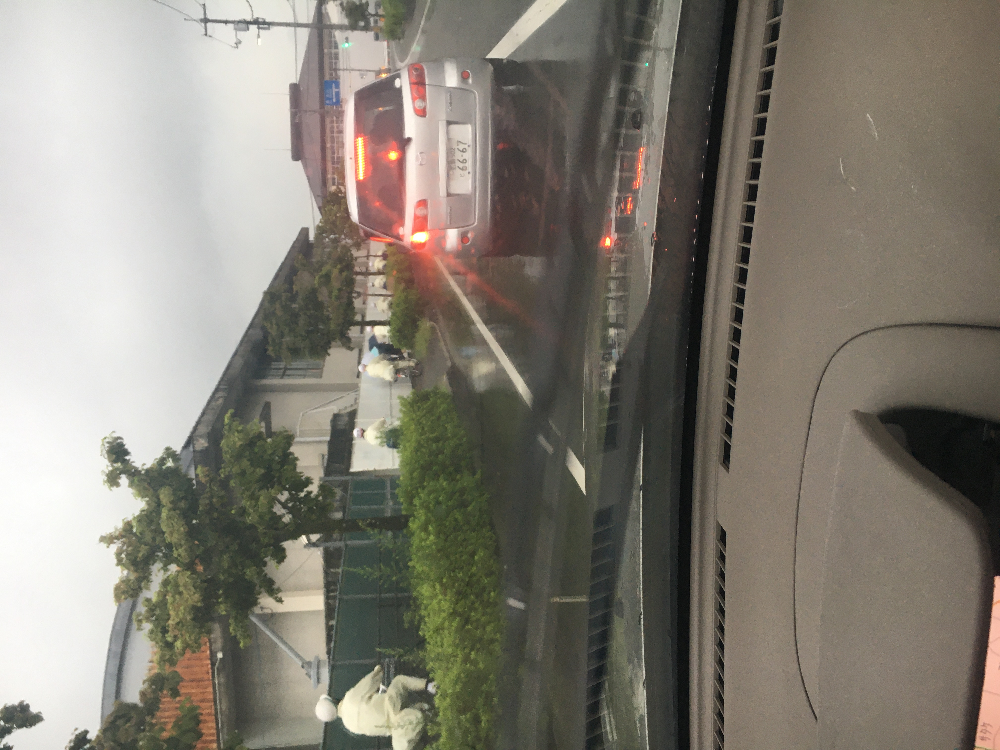
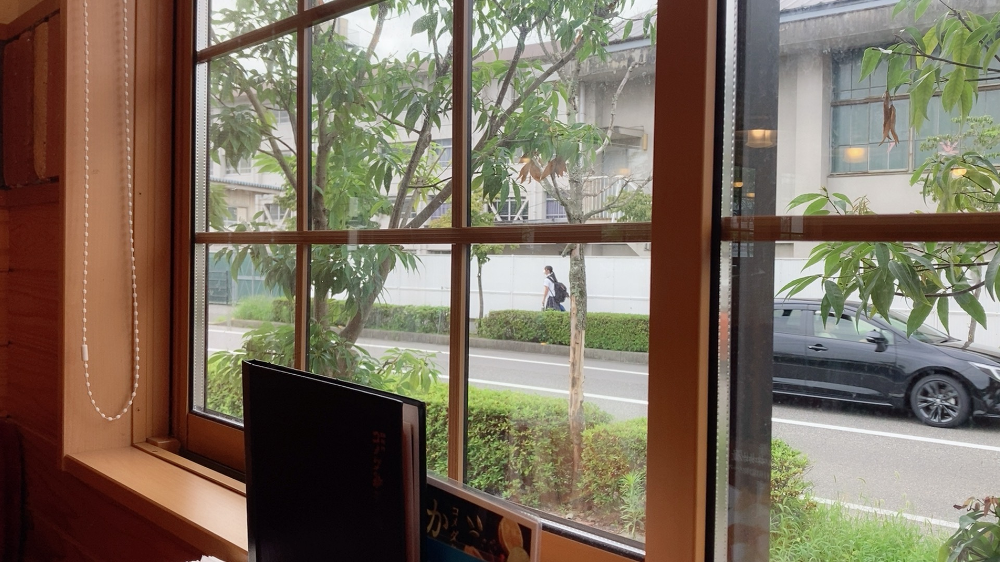
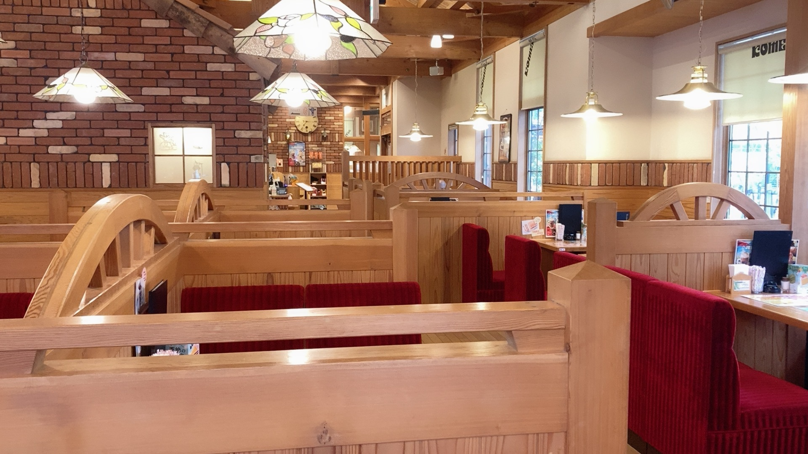
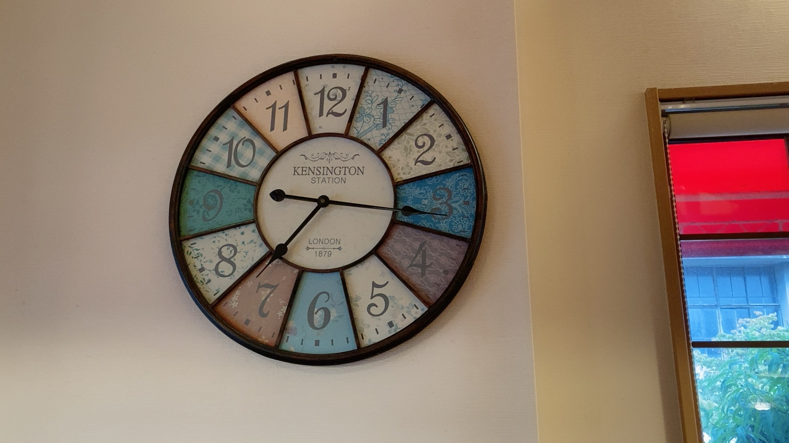
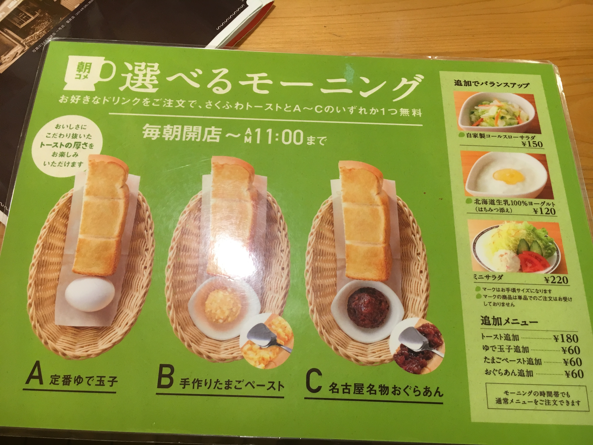
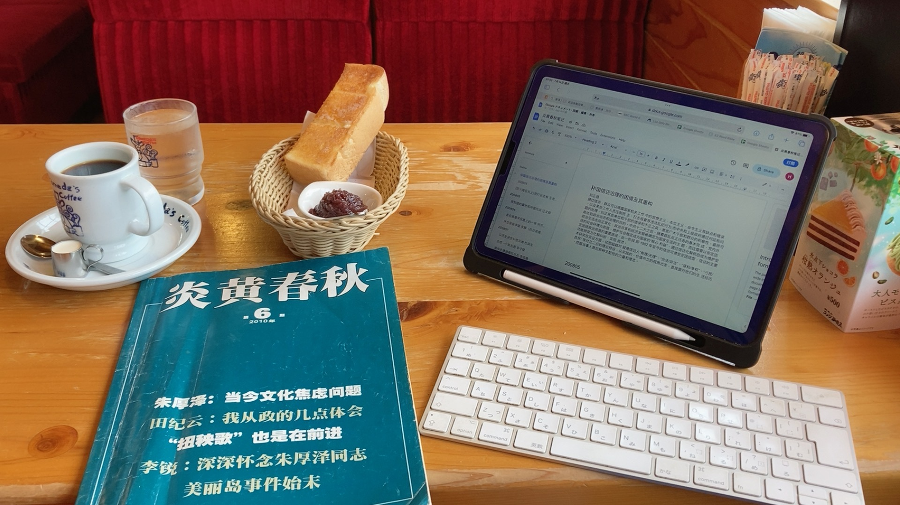
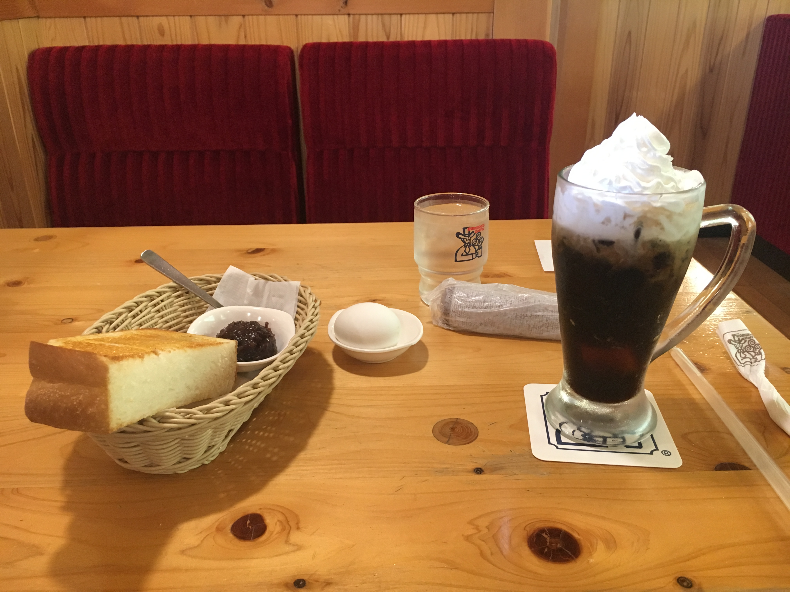

上一章
我2019年学车，学完坐班车回学校时路过komeda (コメダ），当时就有一种强烈的感觉，以后有车要来这里吃早餐看炎黄春秋。这本书话说2016年夏天出事后我就买来看，不过买了一只没看，直到komeda开始。之后就一看不可收拾，爱不释手。我都周五来，最早试过开门7点就到，不过一般左右，看到9点就去附近农家超市买菜然后回学校。后来没有车，骑车也过来维持原来的生活。一般每次喝コメダ ブレンド（komeda咖啡），吃红豆吐司，用一张咖啡券。这是名古屋来的咖啡店。名古屋咖啡店的特色是早餐点咖啡送面包。这里是后吐司，很好吃不过只有半片，吃不饱的。

下雨天开车去komeda路上。这条路经常有学生。日本学生雨衣书包有一致。

门口

我首选近窗边的座位。

窗外景色

室内环境

早餐，我都是Cセート

早餐上来了，我也要准备看杂志了。我还带电脑来做笔记的。



夏天也喝过冻咖啡，这个配奶油的喝起来始终没德国的Eiskaffee好喝。

我要开工了，不和你们聊了。
下一章